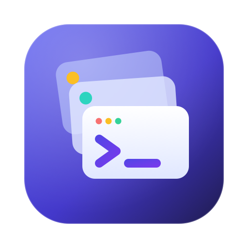
Claude Profile Manager
Uživatelská příručka grafické aplikace pro macOS
Claude Profile Manager umožňuje na jednom uživatelském účtu macOS provozovat několik zcela oddělených prostředí Claude – například osobní a pracovní účet – s vlastní konfigurací, historií, pluginy a přihlášením.
Grafická aplikace Claude Profile Manager.app je nativní okenní rozhraní (SwiftUI) nad osvědčeným nástrojem příkazové řádky claude-manager.py. Veškerou práci s daty – zámky, kontrolu běžících procesů, zálohy, staging a transakční journal – provádí vždy tento skript. Aplikace mu pouze předává přesně stanovené příkazy a jejich výsledky přehledně zobrazuje.
claude-NAZEV, Claude NAZEV.app),/Applications,.cm-*,Každý profil má vlastní datové kořeny. CLI část používá proměnnou CLAUDE_CONFIG_DIR, Desktop část parametr --user-data-dir. Registr všech profilů je uložen v souboru manager.json v instalačním adresáři správce (dále INSTALL_DIR), typicky ~/.local/share/claude-profile-manager.
INSTALL_DIR/
├── claude-manager.py řídicí skript (backend aplikace)
├── manager.json registr profilů
├── sbin/claude-osobni spouštěč CLI (symlink)
├── data/claude-osobni/ CLI data profilu
├── Applications/Claude osobni.app spouštěč Desktopu
├── backups/ ověřené zálohy a importy
└── locks/ receipts/ shell-backups/
~/Library/Application Support/Claude-osobni/ Desktop data profilu~/.claude a ~/Library/Application Support/Claude) a vytvořte jejich zálohu. 3. Vytvořte nové profily, např. osobni a pracovni, a vygenerujte spouštěče. 4. Přidejte PATH blok do shellu, aby fungovaly příkazy claude-NAZEV.| Součást | Požadavek |
|---|---|
| Operační systém | macOS 13 Ventura nebo novější |
| Python | 3.9+ (Homebrew, python.org nebo systémový /usr/bin/python3) |
| Správce profilů | nainstalovaný claude-manager.py (viz README, install.sh) |
| Claude | Claude Code CLI a/nebo Claude.app podle typů profilů |
| Sestavení | Xcode nebo Command Line Tools (Swift 5.9+), jen pro sestavení aplikace |
./install.sh "$HOME/.local/share/claude-profile-manager"cd gui
./build-app.shgui/build/Claude Profile Manager.app včetně ikony a této nápovědy.Aplikace nebo ~/Applications a případně připněte do Docku.Při spuštění aplikace automaticky hledá claude-manager.py v obvyklých umístěních (~/.local/share/claude-profile-manager, ~/Applications/claude-profile-manager a nadřazené složky aplikace) a Python 3 (Homebrew, /usr/local, python.org, systémový). Pokud správce nenajde, zobrazí uvítací obrazovku s výběrem.
Okno je rozděleno na postranní panel s navigací a hlavní oblast s obsahem. Rozložení odpovídá zvyklostem moderních aplikací pro macOS.
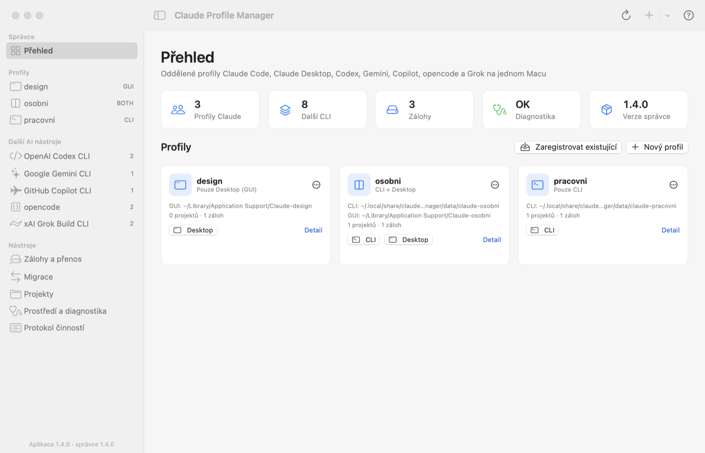
Přehled je výchozí obrazovka. Horní dlaždice ukazují počet profilů, počet záloh, výsledek diagnostiky a verzi správce. Pokud diagnostika najde problém (chybějící adresář, nenalezený Claude binary, nedokončená transakce…), zobrazí se pod dlaždicemi seznam s odkazem na podrobnosti.
Každý profil má vlastní kartu s typem, cestami k datům, počtem projektů a záloh. Tlačítka CLI a Desktop profil přímo spustí, Detail (nebo dvojklik na kartu) otevře jeho nastavení a nabídka ⋯ nabízí rychlé akce.
Pokud zatím nemáte žádný profil, přehled zobrazí průvodce prvními kroky.
| Oblast | Popis |
|---|---|
| Správce → Přehled | Souhrn stavu, problémy z diagnostiky a karty všech profilů. |
| Profily | Seznam profilů s ikonou a typem (CLI / GUI / BOTH). Pravé tlačítko otevře rychlé akce: spuštění, záloha, spouštěče, zobrazení ve Finderu. |
| Nástroje | Zálohy a přenos, Migrace, Projekty, Prostředí a diagnostika, Protokol činností. Oranžová ikona u protokolu značí neúspěšnou operaci. |
| Panel nástrojů | Průběh aktuální operace, Obnovit (⌘R), + nový profil (s nabídkou registrace) a ? nápověda. |
| Oznámení | Úspěšné operace se krátce zobrazí v dolní části okna. Chyby se zobrazí v dialogu s možností přejít do protokolu. |
transaction.json) nebo aktualizaci, zobrazí se v dolní části postranního panelu oranžové upozornění. Kliknutím přejdete přímo k obnově.| Typ | Co vznikne | Poznámka |
|---|---|---|
Pouze CLI (cli) | CLI datový adresář a příkaz claude-NAZEV. | Může běžet současně s jinými CLI i s Desktopem. |
Pouze Desktop (gui) | Desktop datový adresář a aplikace Claude NAZEV.app. | Nevyžaduje instalaci CLI. |
CLI + Desktop (both) | Oba datové kořeny a oba spouštěče. | Výchozí volba, kompatibilní s verzí 1.0. |
Název profilu musí mít 1–32 znaků, začínat malým písmenem a obsahovat jen malá písmena ASCII, číslice, _ a -. Předpona gui- je rezervovaná. Formulář chybný název okamžitě označí.
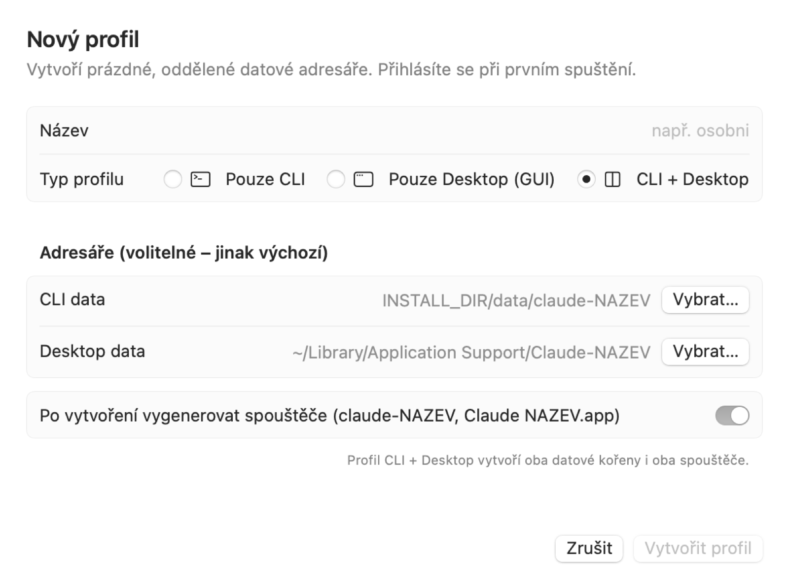
INSTALL_DIR/data/claude-NAZEV a ~/Library/Application Support/Claude-NAZEV. Zadaný adresář nesmí existovat.Nový profil je prázdný. Při prvním spuštění CLI nebo Desktopu se v něm přihlásíte požadovaným účtem.
Volba Zaregistrovat existující data… (⇧⌘N) převezme už existující adresáře bez kopírování a beze změny obsahu. Typicky tak zaregistrujete výchozí instalaci Claude, abyste ji mohli zálohovat a migrovat. Tlačítko Výchozí vyplní standardní cesty ~/.claude a ~/Library/Application Support/Claude.
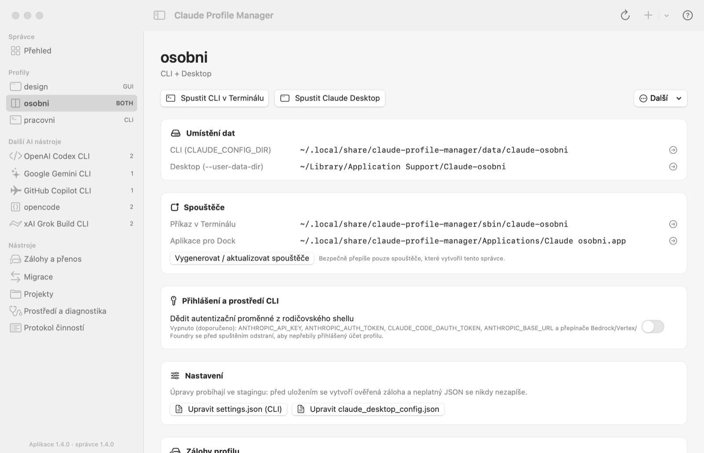
| Sekce | Obsah |
|---|---|
| Umístění dat | Cesty CLI (CLAUDE_CONFIG_DIR) a Desktop (--user-data-dir), případně cesty vypnutých částí. Šipka otevře umístění ve Finderu. |
| Spouštěče | Cesta k příkazu claude-NAZEV a k aplikaci pro Dock. Tlačítko je vygeneruje nebo aktualizuje; přepisuje jen spouštěče vytvořené tímto správcem. |
| Přihlášení a prostředí CLI | Přepínač dědění autentizačních proměnných (viz níže). |
| Nastavení | Bezpečná úprava settings.json (CLI) a claude_desktop_config.json (Desktop). |
| Zálohy profilu | Výběr rozsahu, tlačítko Zálohovat nyní a posledních pět záloh. |
| Projekty | Evidované projektové adresáře, přidání a kopírování projektu. |
| Typ profilu | Změna typu se zachováním dat vypnuté části. |
Ve výchozím stavu (vypnuto, doporučeno) správce před spuštěním CLI odstraní z prostředí proměnné ANTHROPIC_API_KEY, ANTHROPIC_AUTH_TOKEN, CLAUDE_CODE_OAUTH_TOKEN, ANTHROPIC_BASE_URL a přepínače Bedrock, Vertex a Foundry. Klíč z vašeho shellu tak nepřebije účet přihlášený v profilu. Zapnutí (režim inherit) má smysl jen tehdy, pokud profil záměrně používá API klíč nebo cloudového providera. Klíč se nikdy neukládá do manager.json.
Spustit CLI v Terminálu otevře nové okno aplikace Terminál, ve kterém poběží Claude CLI se zvoleným profilem. CLI potřebuje skutečný terminál (TTY), proto neběží uvnitř okna správce. Stejného výsledku dosáhnete příkazem claude-NAZEV v libovolném terminálu (po nastavení PATH).
Spustit Claude Desktop otevře Claude.app s datovým adresářem profilu. Pokud tentýž profil už běží, aplikace jen ohlásí úspěch. Pokud běží jiná instance Claude Desktop, spuštění se odmítne – zabrání se tak smíchání přihlašovacích callbacků mezi účty. Nejprve ukončete běžící Claude Desktop.
INSTALL_DIR/Applications/Claude NAZEV.app lze připnout do Docku a spouštět dvojklikem i bez otevírání správce. Po přesunutí INSTALL_DIR je nutné spouštěče vygenerovat znovu.Tlačítko Upravit settings.json otevře vestavěný editor JSON. Editor průběžně kontroluje platnost, tlačítkem Formátovat obsah uspořádá. Po stisku Zazálohovat a uložit (⌘S) proběhne stejný bezpečný postup jako v příkazové řádce:
Neplatný JSON nebo JSON, jehož nejvyšší úroveň není objekt, nelze uložit – původní soubor zůstane beze změny.
V sekci Typ profilu vyberte nový typ a klikněte na Změnit typ…. Před změnou se zazálohují aktivní kořeny. Data vypnuté části se nemažou, jejich cesty se uloží jako disabled_roots a po opětovném zapnutí se použijí znovu. Aplikace poté automaticky aktualizuje spouštěče. Staré spouštěče vypnuté části zůstanou na disku, ale jejich spuštění bude odmítnuto.
Od verze 1.2.0 spravuje Claude Profile Manager oddělené profily i pro další AI asistenty pro programování v terminálu: OpenAI Codex CLI, Google Gemini CLI, GitHub Copilot CLI, opencode a od verze 1.4.0 také xAI Grok Build CLI.
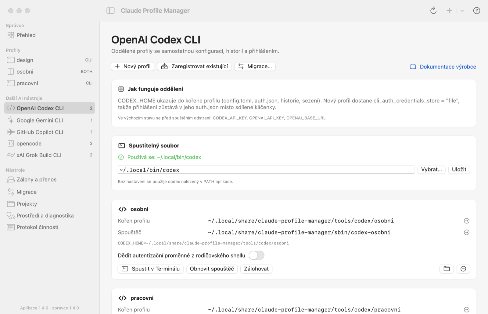
Každý nástroj má zdokumentovanou proměnnou prostředí, která přesměruje jeho uživatelská data do jiného adresáře. Správce ji nastaví jen pro spuštěný proces, takže výchozí instalace nástroje zůstává nedotčená. Profily dalších nástrojů mají vlastní registr; jméno pracovni tak může existovat současně u Claude, Codexu i opencode.
| Nástroj | Nastavované proměnné | Co je v profilu / poznámka k přihlášení |
|---|---|---|
| OpenAI Codex CLI | CODEX_HOME = kořen profilu | config.toml, auth.json, historie, sezení a logy. Nový profil dostane cli_auth_credentials_store = "file", takže přihlášení zůstává v auth.json profilu místo sdílené klíčenky. |
| Google Gemini CLI | GEMINI_CLI_HOME = kořen profilu | Gemini CLI v něm používá složku .gemini (settings.json, historie, .env). Přihlášení Google účtem může ukládat do systémové klíčenky – oddělení OAuth účtů proto není zaručené; API klíče oddělené jsou. |
| GitHub Copilot CLI | COPILOT_HOME = kořen profilu, COPILOT_CACHE_HOME = INSTALL_DIR/cache/copilot-NAZEV | Nahrazuje celé ~/.copilot (settings, config.json, session-state, MCP, skills, agents). OAuth token je v klíčence (služba copilot-cli) podle účtu; v každém profilu se přihlaste příkazem /login vlastním účtem. |
| opencode | XDG_CONFIG_HOME, XDG_DATA_HOME, XDG_STATE_HOME do profilu, XDG_CACHE_HOME do INSTALL_DIR/cache | opencode.json, auth.json, opencode.db, logy a snapshoty. Ověřeno příkazem opencode debug paths (opencode 2.2.5). Proměnné XDG zdědí i programy, které opencode spustí (git, gh…). |
| xAI Grok Build CLI | GROK_HOME = kořen profilu; mimo původní ~/.grok také GROK_DISABLE_AUTOUPDATER=1 | config.toml, auth.json, sessions, memory, skills, pluginy, agenti, logy. Přihlášení je v auth.json profilu – ověřeno s grok 1.0.70: nový profil hlásí „You are not authenticated“ a původní přihlášení zůstane beze změny. Automatické aktualizace jsou v profilech vypnuté, aby si každý profil nestahoval vlastní kopii programu (~340 MB); aktualizujte v původní instalaci příkazem grok update. |
Stejně jako u Claude se před spuštěním ve výchozím stavu odstraní proměnné, které by přebily účet přihlášený v profilu. Dědění lze pro konkrétní profil zapnout přepínačem nebo příkazem tool-auth-env NASTROJ NAZEV inherit.
| Nástroj | Proměnné |
|---|---|
| Codex | CODEX_API_KEY, OPENAI_API_KEY, OPENAI_BASE_URL |
| Gemini | GEMINI_API_KEY, GOOGLE_API_KEY, GOOGLE_APPLICATION_CREDENTIALS, GOOGLE_CLOUD_PROJECT, GOOGLE_CLOUD_PROJECT_ID, GOOGLE_CLOUD_LOCATION, GOOGLE_GENAI_USE_VERTEXAI |
| Copilot | COPILOT_GITHUB_TOKEN, GH_TOKEN, GITHUB_TOKEN (podle dokumentace mají přednost před účtem z /login) |
| Grok | XAI_API_KEY, GROK_AUTH_PROVIDER_COMMAND, GROK_AUTH_PROVIDER_LABEL, GROK_AUTH_TOKEN_TTL, GROK_AUTH_EARLY_INVALIDATION_SECS, GROK_OIDC_ISSUER, GROK_OIDC_CLIENT_ID, GROK_DEPLOYMENT_KEY, GROK_XAI_API_BASE_URL |
| opencode | OPENCODE_CONFIG, OPENCODE_CONFIG_DIR, OPENCODE_CONFIG_CONTENT a klíče poskytovatelů (ANTHROPIC_API_KEY, OPENAI_API_KEY, GEMINI_API_KEY, GOOGLE_GENERATIVE_AI_API_KEY, OPENROUTER_API_KEY, GROQ_API_KEY, XAI_API_KEY, MISTRAL_API_KEY, DEEPSEEK_API_KEY) |
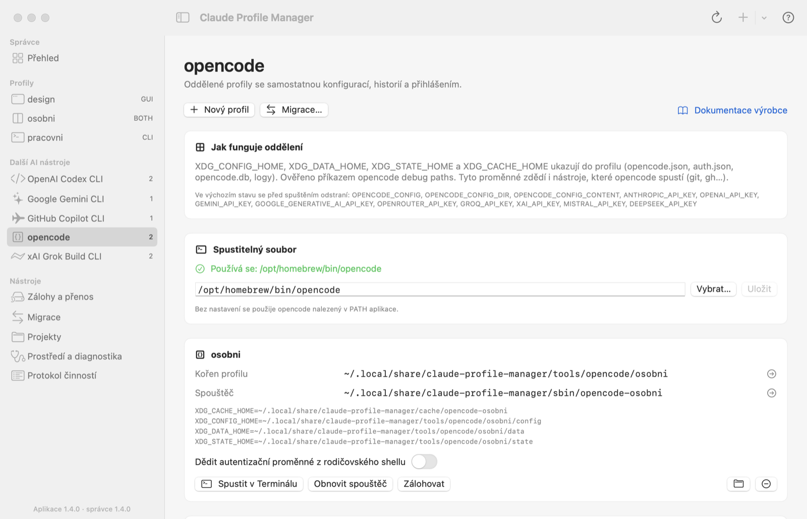
INSTALL_DIR/tools/NASTROJ/NAZEV (lze zvolit jiný adresář). Zaregistrovat existující převezme stávající data bez kopírování – např. ~/.codex nebo ~/.copilot. U Gemini registrujte adresář obsahující .gemini; samotný domovský adresář registrovat nelze. opencode podporuje jen spravované profily, protože výchozí data leží ve čtyřech různých adresářích.NASTROJ-NAZEV (např. codex-pracovni) v INSTALL_DIR/sbin umožňuje totéž z libovolného terminálu; argumenty, vstup, výstup i návratový kód se předávají beze změny.codex login, výběr účtu v Gemini CLI, /login v Copilot CLI, /connect v opencode, grok login v Grok Build CLI).INSTALL_DIR/tool-backups. Obnovit… vrátí profil do stavu zálohy; předtím zazálohuje aktuální stav a vyžaduje, aby nástroj neběžel.tool-list, tool-create, tool-register, tool-unregister, tool-set-binary, tool-auth-env, tool-launchers, tool-run, tool-backup, tool-verify, tool-restore, tool-migrate, tool-migrate-backup, tool-export, tool-import. Příklad: claude-manager.py tool-create codex pracovni --yes.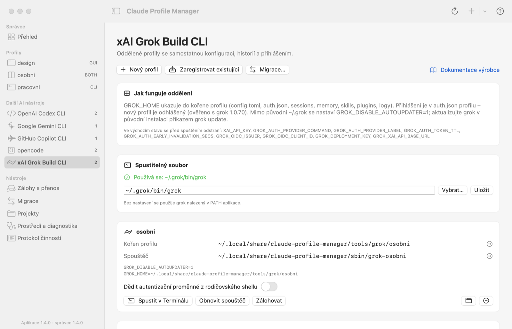
brew install grok instaluje nesouvisející nástroj pro regulární výrazy. Správce proto hledá Grok Build CLI nejprve v ~/.grok/bin/grok (umístění oficiálního instalátoru) a teprve potom v PATH. Grok Build lze z Homebrew nainstalovat jako brew install --cask grok-build.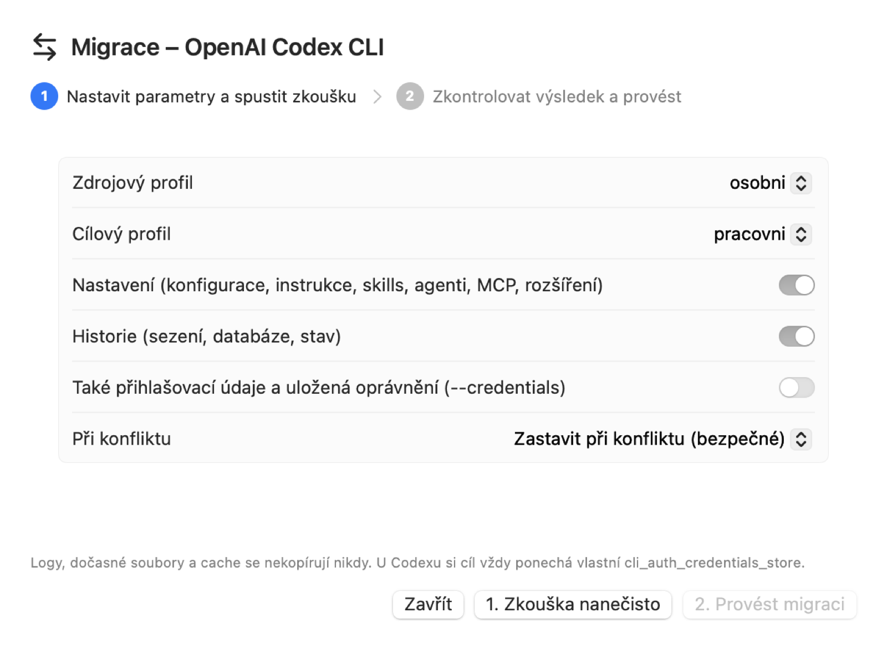
Tlačítko Migrace… zkopíruje vybrané části jednoho profilu nástroje do jiného profilu téhož nástroje. Postup je stejný jako u Claude: nejprve Zkouška nanečisto, která připraví a zkontroluje staging a vypíše počty souborů a konflikty, potom Provést migraci – před zápisem se cíl zazálohuje a přepnutí proběhne transakčně.
| Třída souborů | Co do ní patří | Kopíruje se |
|---|---|---|
| Nastavení | vše, co nepatří do ostatních tříd: konfigurace, instrukce (AGENTS.md, GEMINI.md…), skills, agenti, příkazy, MCP, rozšíření | volba „Nastavení“ (výchozí) |
| Historie | Codex: sessions, archived_sessions, history.jsonl, memories; Gemini: .gemini/tmp, .gemini/history; Copilot: session-state, session-store.db, command-history-state; opencode: data, state; Grok: sessions, memory, memory-v2, memtrace; u všech také databáze SQLite | volba „Historie“ |
| Přihlášení | Codex auth.json; Gemini oauth_creds.json, google_accounts.json, tokeny MCP, .env; Copilot config.json, providers.json, permissions-config.json, mcp-oauth-config, mcp-secrets; opencode auth.json, mcp-auth.json; Grok auth.json, agent_id, trusted_folders.toml, hooks-paths | jen s volbou --credentials |
| Dočasné | logy, tmp, cache, zámky *.lock, data integrace IDE; u Grok také instalace programu (bin, downloads, bundled, vendor, docs) | nikdy |
Symbolické odkazy se kopírují jako odkazy, nikdy se nenásledují. U Codexu si cíl vždy ponechá svou hodnotu cli_auth_credentials_store, i když zdroj ukládá přihlášení jinam. Konflikty se řeší stejně jako u Claude: Zastavit, Ponechat cílový nebo Nahradit zdrojem.
.tar.gz a soubor .sha256; absolutní odkazy uvnitř profilu se převedou na relativní, odkazy mimo profil export odmítne.INSTALL_DIR/tool-backups.tool-migrate codex osobni pracovni --components settings,history (zkouška) a totéž s --apply --yes; tool-export ZALOHA ARCHIV, tool-import ARCHIV --sha256 …, tool-migrate-backup ZALOHA CIL.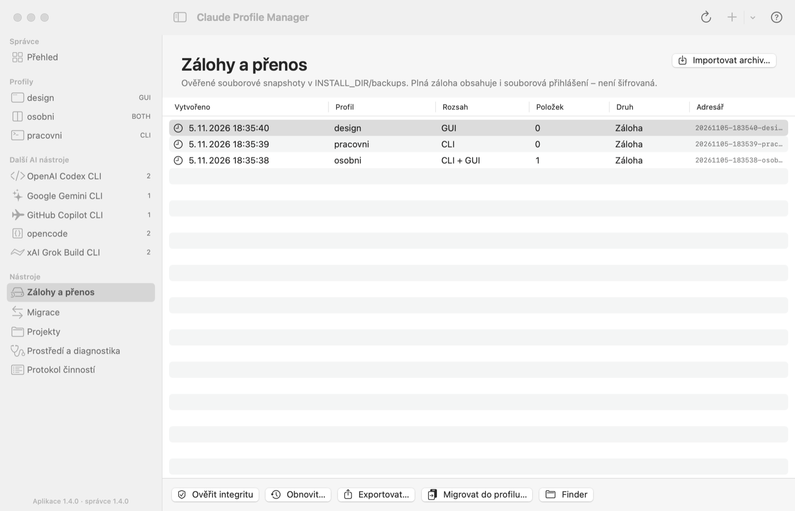
Obrazovka zobrazuje všechny zálohy a importy v INSTALL_DIR/backups s datem, profilem, rozsahem a počtem položek. Po výběru řádku se ve spodní liště zpřístupní akce; stejné akce nabízí kontextová nabídka.
Zálohu vytvoříte v detailu profilu (sekce Zálohy profilu) nebo z rychlých akcí profilu. Každý soubor se po zkopírování kontroluje pomocí SHA-256 a záloha se ihned ověří.
| Akce | Popis |
|---|---|
| Ověřit integritu | Porovná obsah zálohy s jejím manifestem (SHA-256 každého souboru). |
| Obnovit… | Přesná obnova snapshotu do původních cest profilu včetně souborových přihlášení. Před obnovou se automaticky vytvoří záloha aktuálního stavu. Vyžaduje potvrzení. U importovaných záloh není dostupná – použijte migraci. |
| Exportovat… | Vytvoří archiv .tar.gz a vedle něj soubor .sha256. Absolutní odkazy uvnitř dat se převedou na relativní, externí symlinky se odmítnou. Kontrolní součet se zobrazí v okně. |
| Migrovat do profilu… | Otevře Migraci s touto zálohou jako zdrojem. |
| Finder | Zobrazí adresář zálohy. |
.sha256). Import pouze ověří a bezpečně rozbalí zálohu, žádný profil nemění.Import odmítá path traversal, hardlinky, zařízení, externí symlinky a archivy přesahující limity. Projektové adresáře mimo profil nejsou součástí zálohy – přeneste je samostatně a v migraci použijte přemapování cest.
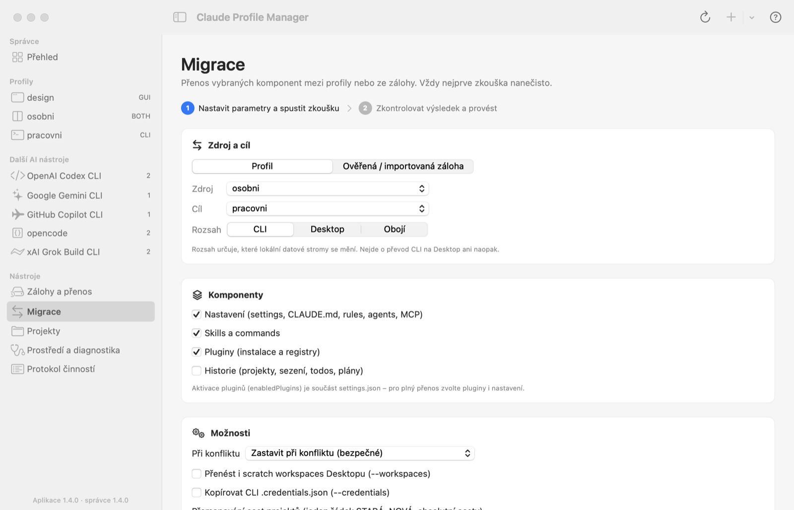
Migrace přenáší vybrané komponenty z jednoho profilu (nebo ze zálohy) do jiného profilu. Probíhá vždy ve dvou krocích, které ukazuje ukazatel v horní části obrazovky:
| Volba | Význam |
|---|---|
| Zdroj | Profil, nebo ověřená/importovaná záloha. |
| Rozsah | Které lokální datové stromy se mění: CLI, Desktop nebo obojí. Nejde o převod CLI na Desktop. U profilů různých typů zvolte společný rozsah. |
| Nastavení | settings.json, CLAUDE.md, rules, agents, output styles a z .claude.json pouze mcpServers (bez účtu a projektové důvěry). |
| Skills | Adresáře skills a legacy commands. |
| Pluginy | Instalace a registry pluginů. Aktivace (enabledPlugins) je součástí nastavení – pro plný přenos zvolte obojí. |
| Historie | Projekty, history.jsonl, todos, tasks, plány a historie souborů. |
| Při konfliktu | Zastavit (výchozí, bezpečné) – při rozdílném cílovém souboru se nic nezmění; Ponechat cílový; Nahradit zdrojem. Rozhoduje vaše volba, nikoli čas změny. |
| Scratch workspaces | Přenese pracovní adresáře Desktopu (scratch-workspaces) s přemapováním cest. |
| CLI .credentials.json | Jen u zdroje typu profil. Kopíruje souborový credential CLI, ne Keychain ani přihlášení Desktopu. |
| Přemapování cest | Řádky ve tvaru /stara/cesta=/nova/cesta (absolutní). Přepíší se rozpoznané cesty v historii a zakódované projektové adresáře. Neplatný řádek se zvýrazní červeně. |
Před migrací GUI historie spusťte cílový Desktop profil, přihlaste se, alespoň jednou otevřete Code a vše znovu ukončete. Správce vyžaduje jednoznačný lokální index účtu a organizace. Po přenosu každé sezení skutečně otevřete a ověřte starší zprávy, rozpracovaný stav, pracovní adresář, větev a aktivní účet – samotný název v seznamu není důkazem funkčnosti.
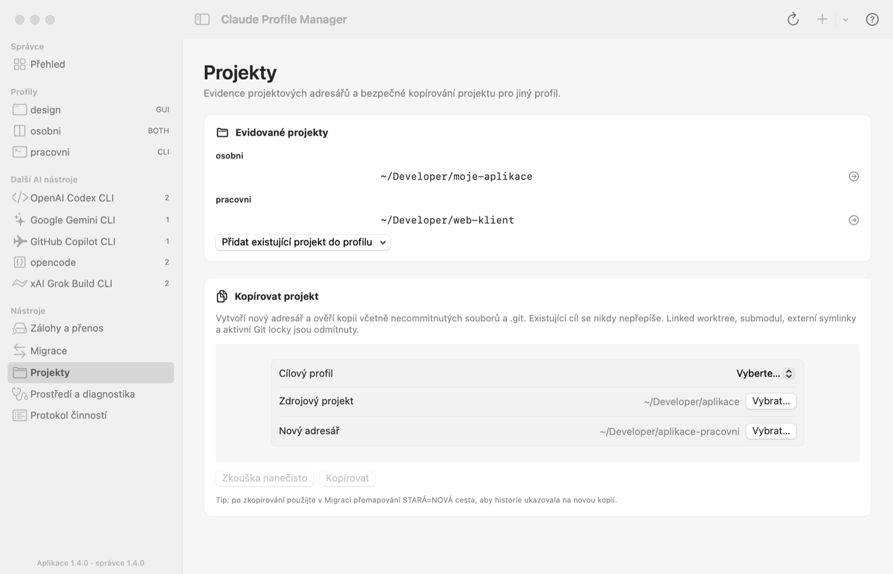
Přidat existující projekt do profilu pouze zaeviduje existující adresář u zvoleného profilu. Nic se nekopíruje.
Funkce vytvoří nový adresář a ověří kopii včetně necommitnutých souborů a adresáře .git. Existující cíl se nikdy nepřepíše. Postup je stejný jako u migrace: nejdřív Zkouška nanečisto, potom Kopírovat.
Kopírování se odmítne u linked worktree a submodulů (.git jako soubor), registrovaných dalších worktree, explicitního core.worktree, externích alternates, externích symlinků a aktivních Git zámků. Během kopírování nesmí projekt měnit editor, build ani server. Absolutní odkazy dovnitř projektu se v kopii převedou na relativní.
STARÁ=NOVÁ, aby historie cílového profilu ukazovala na novou kopii.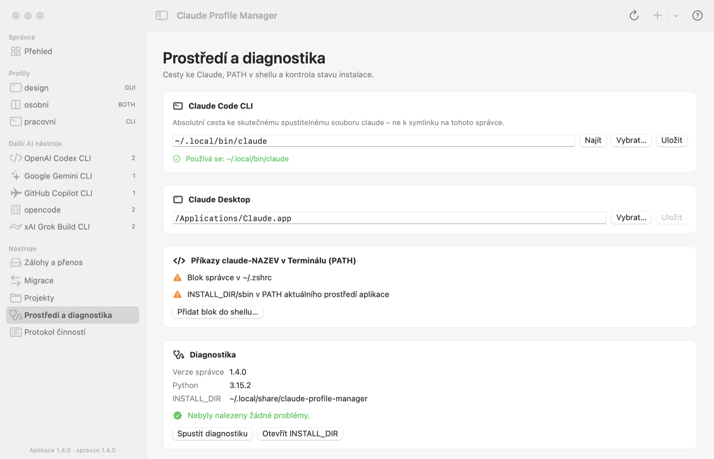
Claude Code CLI: zadejte absolutní cestu ke skutečnému spustitelnému souboru claude. Tlačítko Najít zjistí command -v claude v přihlašovacím shellu; pokud nalezený soubor vede na tohoto správce, aplikace ho odmítne (ochrana proti rekurzi). Uložení cestu ověří.
Claude Desktop: výchozí je /Applications/Claude.app. Pokud máte aplikaci jinde (např. v ~/Applications), vyberte ji a uložte. Správce ověří, že jde o balíček Claude.app.
Aby fungovaly příkazy claude-NAZEV, musí být INSTALL_DIR/sbin v proměnné PATH. Tlačítko Přidat blok do shellu… po potvrzení zazálohuje ~/.zshrc (nebo ~/.profile) do shell-backups a přidá označený, idempotentní blok. Ostatní obsah souboru zůstane beze změny. Změna se projeví v novém okně Terminálu.
Řádek INSTALL_DIR/sbin v PATH aktuálního prostředí aplikace může zůstat žlutý i po správném nastavení – grafické aplikace nenačítají .zshrc. Rozhodující je stav bloku v souboru.
Spustit diagnostiku (příkaz doctor) zkontroluje adresáře profilů, překryvy kořenů, Claude binary, PATH a nedokončené transakce či aktualizace. Pokud existuje přerušená transakce, zobrazí se tlačítko Obnovit přerušenou transakci…. Obnova podle trvanlivého journalu buď dokončí potvrzený commit, nebo vrátí původní kořeny; nová data se při ní záměrně nemažou.
transaction.json ani adresáře .cm-old-*, .cm-stage-* či .cm-recovered-*, dokud nezkontrolujete receipts a ověřenou zálohu. Přerušenou aktualizaci obnovíte z nového balíčku příkazem update.sh INSTALL_DIR --recover --yes.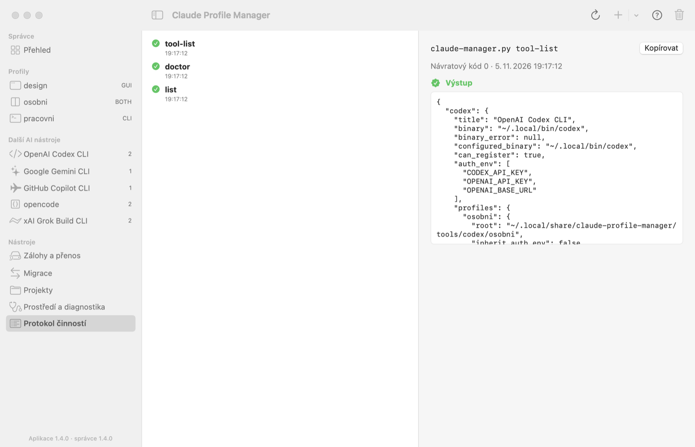
Protokol zaznamenává každý příkaz, který aplikace předala claude-manager.py – přesný příkazový řádek, návratový kód, výstup a chybový výstup. Slouží k:
Protokol se uchovává jen po dobu běhu aplikace (posledních 300 záznamů) a lze ho vymazat tlačítkem na panelu nástrojů.
| Zásada | Co to znamená v praxi |
|---|---|
| Žádné neohlášené přepisy | Migrace a kopie projektů vždy začínají zkouškou; zápis vyžaduje výslovné potvrzení. Výchozí reakce na konflikt je chyba. |
| Zálohy před zápisem | Migrace, obnova, úprava nastavení i změna typu vytvoří a ověří zálohu cíle. Zápis probíhá přes staging a journal. |
| Zastavená data | Datové operace vyžadují ukončené Claude CLI, Desktop i Code v editorech. Správce používá zámky a kontrolu procesů, ale nezabrání spuštění nezávislého procesu. |
| Přihlášení | Běžná migrace nekopíruje .credentials.json, účtový .claude.json, cookies, OAuth databáze ani Keychain. |
| Důvěra | Skills, pluginy, hooks a MCP mohou spouštět kód. Kopírujte je jen z důvěryhodných profilů a respektujte pravidla zaměstnavatele. |
| Místo na disku | Staging a zálohy mohou zabrat několikanásobek velikosti dat. Staré zálohy se automaticky nemažou. |
--user-data-dir a interní soubory sezení Desktopu nejsou stabilní veřejné API; aktualizace Claude může kompatibilitu změnit.CLAUDE_CONFIG_DIR. Počítejte s možným společným ~/.claude a ověřte chování vaší verze.Před ostrým použitím doporučujeme pilotní test s prázdným CLI a Desktop profilem.
| Hlášení | Příčina a řešení |
|---|---|
Close all Claude GUI/CLI/editor sessions before data operations. PIDs: … | Běží Claude CLI, Desktop nebo Code v editoru. Ukončete je (včetně terminálových sezení a rozšíření v editorech) a operaci zopakujte. Seznam PID najdete v protokolu. |
Profile/manager is busy | Jiná operace správce právě drží zámek (např. probíhá záloha v Terminálu). Počkejte na její dokončení. |
Interrupted transaction detected. Run: recover | Předchozí operace byla přerušena. Ukončete Claude a v části Prostředí spusťte obnovu. |
Claude CLI not found / Not an executable absolute Claude path | Nastavte cestu ke Claude CLI v části Prostředí. |
Recursive wrapper detected | Zadaná cesta vede na spouštěč tohoto správce. Vyberte skutečný binary Claude. |
Another Claude Desktop process is active | Běží jiná instance Claude Desktop. Ukončete ji (⌘Q) a spusťte profil znovu. |
Directory exists; use register… | Cílový adresář nového profilu již existuje. Použijte registraci, nebo zvolte jinou cestu. |
Overlapping profile roots / Unsafe managed root | Cesta je shodná, vnořená nebo nadřazená jinému profilu či chráněnému adresáři. Zvolte samostatný adresář. |
Archive SHA-256 mismatch | Archiv je poškozený, nebo nesouhlasí kontrolní součet. Archiv nepoužívejte a přeneste ho znovu. |
Refusing to overwrite launcher/unowned app | Na místě spouštěče je soubor, který nevytvořil tento správce. Přesuňte ho ručně. |
| Aplikace hlásí, že správce není nastaven | Otevřete Nastavení (⌘,) a vyberte claude-manager.py a Python 3.9+. |
Příkaz claude-NAZEV v Terminálu neexistuje | Přidejte PATH blok v části Prostředí a otevřete nové okno Terminálu. Ověřte, že byly vygenerovány spouštěče. |
Close all OpenAI Codex CLI sessions… (a obdobně u dalších nástrojů) | Daný nástroj běží. Ukončete ho a zálohu nebo obnovu zopakujte. |
… not found. Configure: tool-set-binary | Nástroj není nainstalovaný nebo není v PATH aplikace. Nainstalujte ho, nebo nastavte cestu na obrazovce nástroje. |
| V profilu Copilot / Gemini je přihlášen jiný účet | Zkontrolujte, zda nemáte zapnuté dědění proměnných (GH_TOKEN, GEMINI_API_KEY…). U Copilotu přepněte účet příkazem /user switch nebo /logout a /login. |
| Po přesunutí INSTALL_DIR nefungují ikony v Docku | Spouštěče obsahují absolutní cesty. V detailu každého profilu je vygenerujte znovu. |
| Zkratka | Akce |
|---|---|
| ⌘N | Nový profil |
| ⇧⌘N | Zaregistrovat existující data |
| ⌘R | Obnovit profily, zálohy a diagnostiku |
| ⌘1 … ⌘5 | Přehled, Zálohy, Migrace, Projekty, Prostředí |
| ⌘L | Protokol činností |
| ⌘, | Nastavení aplikace (umístění správce a Pythonu) |
| ⌘? | Tato nápověda |
| ⌘S | V editoru nastavení: zazálohovat a uložit |
Každá akce aplikace odpovídá příkazu claude-manager.py; přesné znění vždy uvidíte v protokolu.
| Akce v aplikaci | Příkaz |
|---|---|
| Nový profil | create NAZEV --type both --yes |
| Registrace | register NAZEV --cli-dir … --gui-dir … --yes |
| Spouštěče | launchers NAZEV |
| Spustit CLI / Desktop | cli NAZEV / gui NAZEV |
| Dědění proměnných | auth-env NAZEV inherit|clean |
| Změna typu | set-type NAZEV cli|gui|both --yes |
| Úprava nastavení | edit-settings NAZEV --scope cli|gui --yes |
| Záloha / ověření / obnova | backup, verify, restore … --yes |
| Export / import | export ZALOHA ARCHIV, import ARCHIV --sha256 … |
| Migrace | migrate / migrate-backup (+ --apply --yes) |
| Projekty | project-add, project-copy (+ --apply --yes) |
| Další AI nástroje | tool-create, tool-register, tool-run, tool-launchers, tool-backup, tool-restore, tool-auth-env, tool-migrate, tool-migrate-backup, tool-export, tool-import (nástroje codex, gemini, copilot, opencode, grok) |
| Prostředí | set-binary, set-gui-app, path --write --yes, doctor, recover |
| Pojem | Význam |
|---|---|
| Profil | Pojmenované, oddělené prostředí Claude s vlastními daty a přihlášením. |
| INSTALL_DIR | Adresář s claude-manager.py, registrem profilů, spouštěči a zálohami. |
| Datový kořen | Adresář s daty části profilu (CLI nebo Desktop). |
| Spouštěč | Symlink claude-NAZEV nebo aplikace Claude NAZEV.app, které spustí Claude se správným profilem. |
| Zkouška nanečisto (dry-run) | Příprava a ověření operace ve stagingu bez změny profilů. |
| Staging | Dočasná skrytá kopie (.cm-stage-*), ve které se změna připraví a ověří. |
| Journal / transakce | Trvanlivý záznam (transaction.json) umožňující dokončit nebo vrátit přerušené přepnutí dat. |
| Komponenta | Část dat pro migraci: nastavení, skills, pluginy, historie. |
| Rozsah (scope) | Které datové stromy operace mění: CLI, Desktop, nebo obojí. |
| Přemapování (map) | Pravidlo STARÁ=NOVÁ pro přepis cest projektů v historii. |
| Verze | Změny |
|---|---|
| 1.4.0 listopad 2026 | Podpora xAI Grok Build CLI: profily přes GROK_HOME, oddělené přihlášení, spouštěče grok-NAZEV, zálohy, migrace a přenos; vypnuté automatické aktualizace v profilech, přednost oficiálního umístění programu před nesouvisejícím grok z Homebrew. |
| 1.3.0 listopad 2026 | Migrace mezi profily dalších AI nástrojů (nastavení, historie, volitelně přihlášení) se zkouškou nanečisto, export a import jejich záloh pro přenos na jiný Mac, balíček vydání s aplikací a nápovědou. |
| 1.2.0 listopad 2026 | Profily pro OpenAI Codex CLI, Google Gemini CLI, GitHub Copilot CLI a opencode: vytvoření, registrace, spouštěče NASTROJ-NAZEV, oddělení autentizačních proměnných, zálohy a obnova. Nativní grafická aplikace pro macOS s nápovědou v PDF a zobrazením verze aplikace i správce. |
| 1.1.0 | Typy profilů CLI / Desktop / obojí, aktualizátor update.sh s obnovou, editor nastavení. |
| 1.0.0 | První verze: kombinované profily Claude CLI a Desktop, zálohy, migrace, kopírování projektů. |
Claude Profile Manager je nezávislý nástroj komunity a není produktem společností Anthropic, OpenAI, Google, GitHub, xAI ani autorů opencode. Uvedené názvy jsou ochranné známky svých vlastníků.